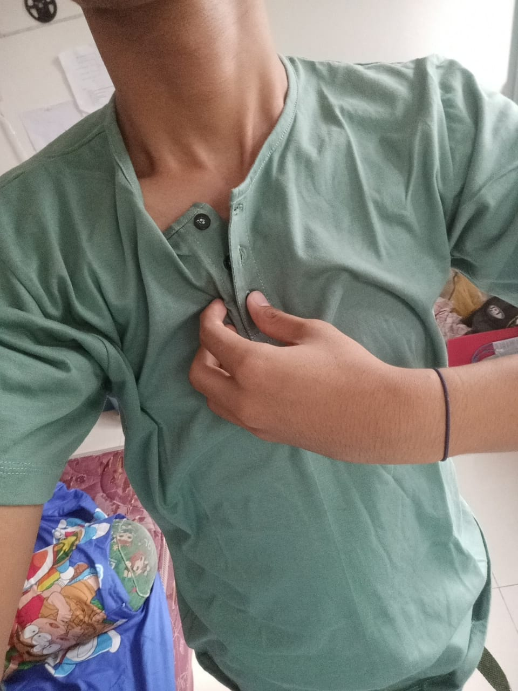
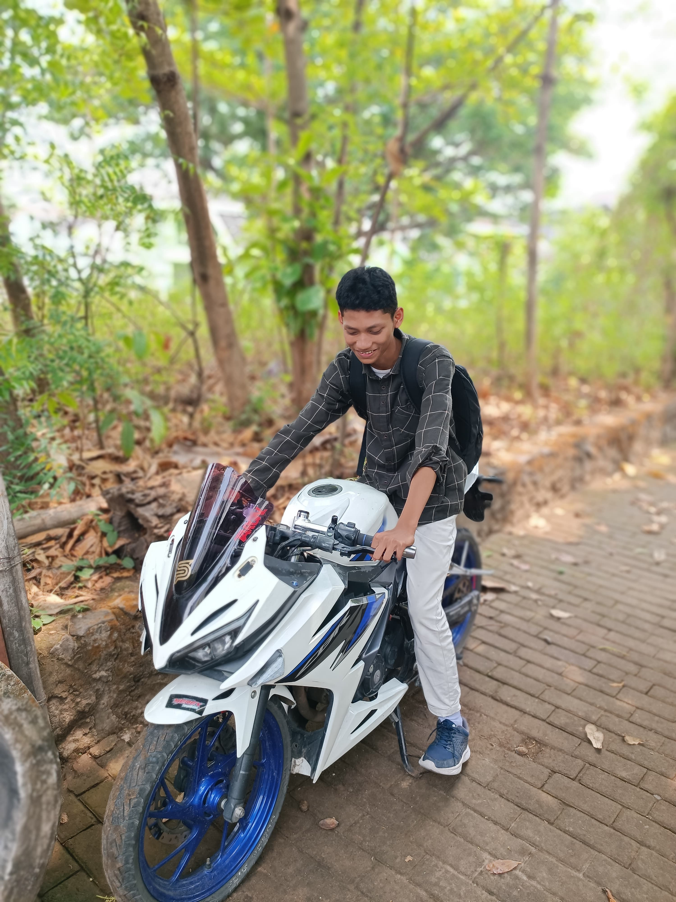

| BIODATA | |||
|---|---|---|---|
|  | NIM | : 2333070 | |
| Nama | : Wisnu Adi Pradana | ||
| Alamat | : Blora, Jawa Tengah | ||
| TTL | : Blora, 02 Oktober 2005 | ||
| Kelas | : TI 2B | ||
|  | NIM | : 2333070 | |
| Nama | : Cipta Rangga | ||
| Alamat | : Ds. Ngadirejo Rt. 20 Rw. 09 Kec. Wonoasri Kab. Madiun | ||
| TTL | : Madiun, 19 Agustus 2005 | ||
| Kelas | : TI 2B | ||
| NIM | : 2333070 | ||
| Nama | : Fandi S | ||
| Alamat | : Dsn. Sendangrejo Kidul RT/RW 04/07, Ds. Wonokerto, Kec. Kedunggalar, Kab. Ngawi | ||
| TTL | : Ngawi, 04 November 2004 | ||
| Kelas | : TI 2B | ||